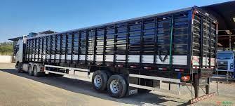
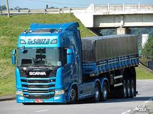
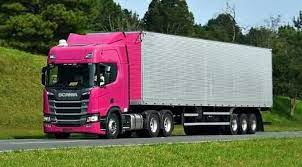
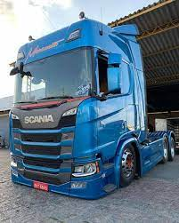

METAS DA NIIH
Joubert afirma que o Scania R450 é o veículo que tem sido mais vendido pela fabricante.
Ele continua dizendo que o R corresponde ao tipo de cabine e o 450 diz respeito à potência do
caminhão. Além disso, o R450, nas palavras do entrevistado, foi desenvolvido
para substituir outro modelo que vendeu muito no passado: o R440, que foi produzido até 2018.
As primeiras entregas do R450 ocorreram em fevereiro de 2019, sendo que houve a venda de 528
veículos. A facilidade de customização é um dos fatores mais procurados pelos caminhoneiros,
de modo a se adequar, por exemplo, ao tipo de carga transportada. Podemos ainda mencionar que o
Scania R450 veio com os seguintes itens de fábrica:
ar-condicionado; geladeira; TV;
Parking Cooler, uma espécie de ar-condicionado elétrico. Com o veículo desligado, ele pode atuar
por até oito horas.

Para que tipo de transporte ele pode ser usado?
Sobre o tipo de transporte, nosso entrevistado diz que o R450 é muito indicado para o transporte
rodoviário. Joubert também destaca o uso dessa cabine em veículos como carretas e caminhões bitrem.
Para completar, ele pontua que a motorização de 450 pode ser ainda aplicada no segmento de mineração,
sendo que, neste caso, a cabine será a G e não a R.


